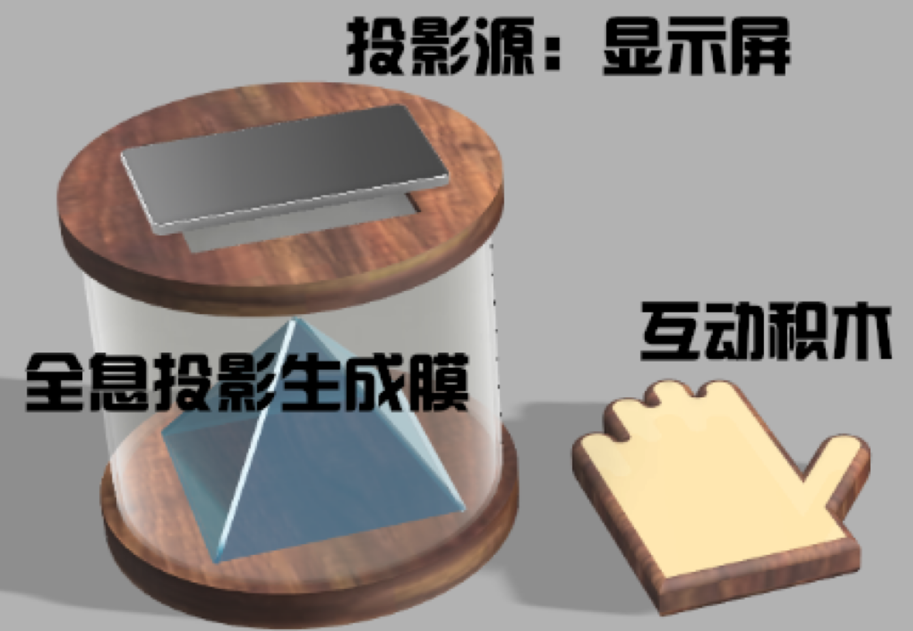
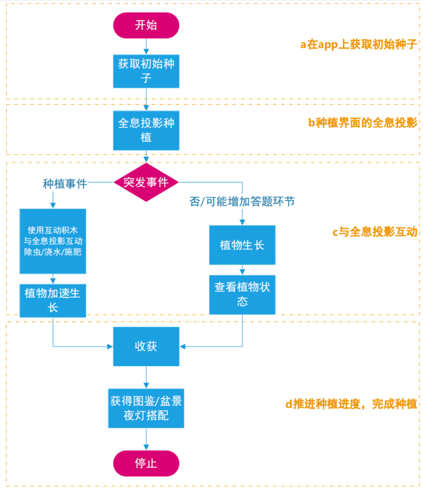
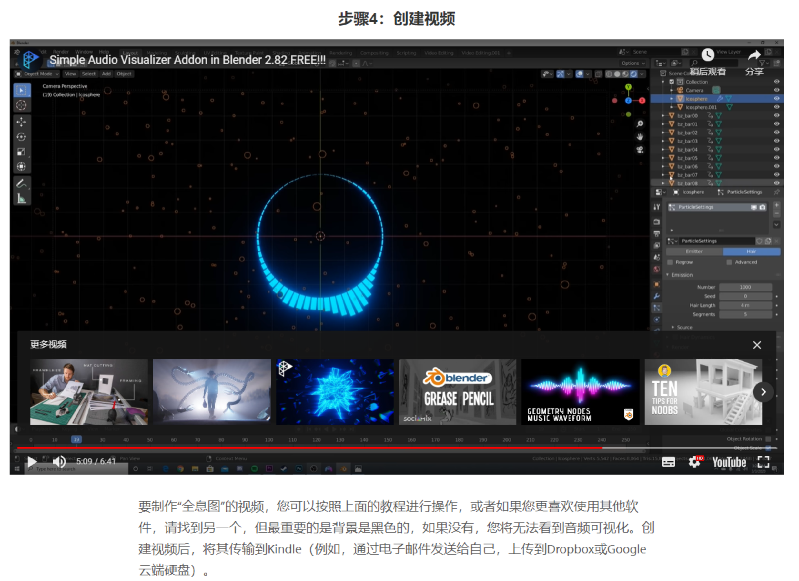
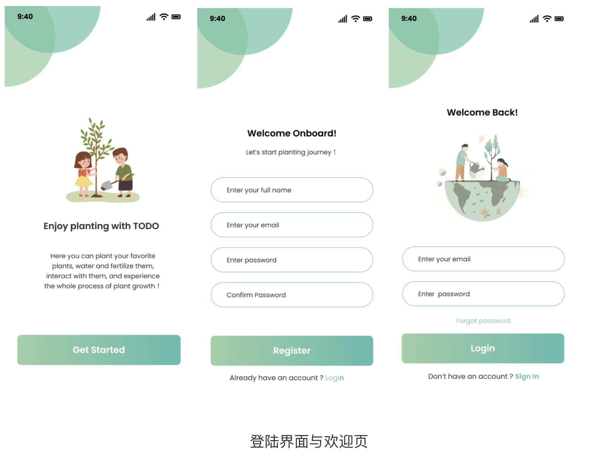
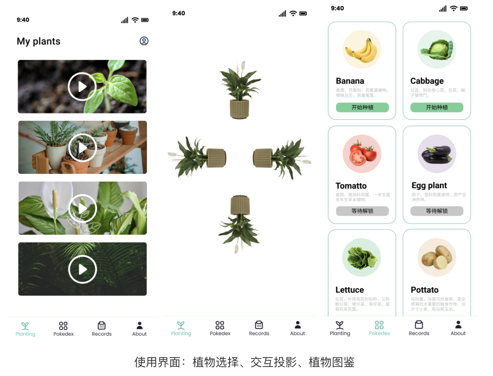
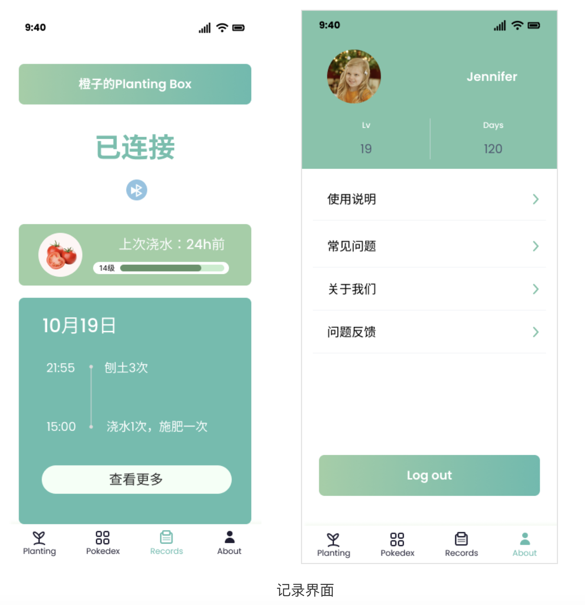
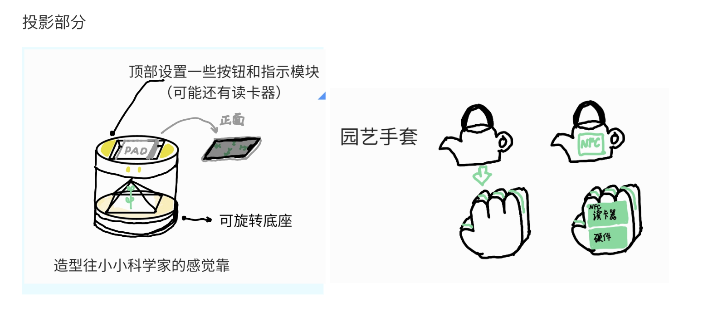
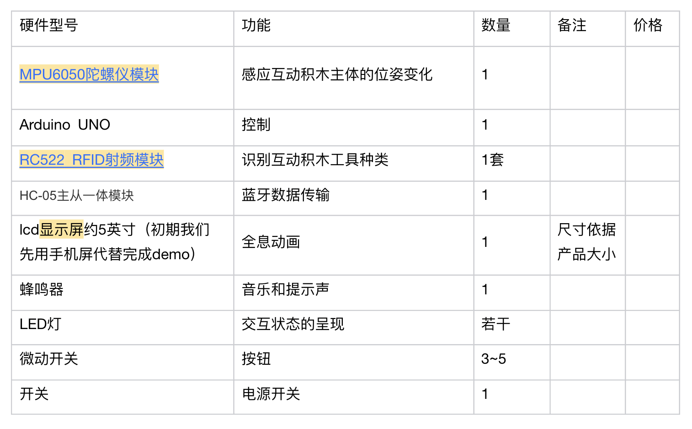
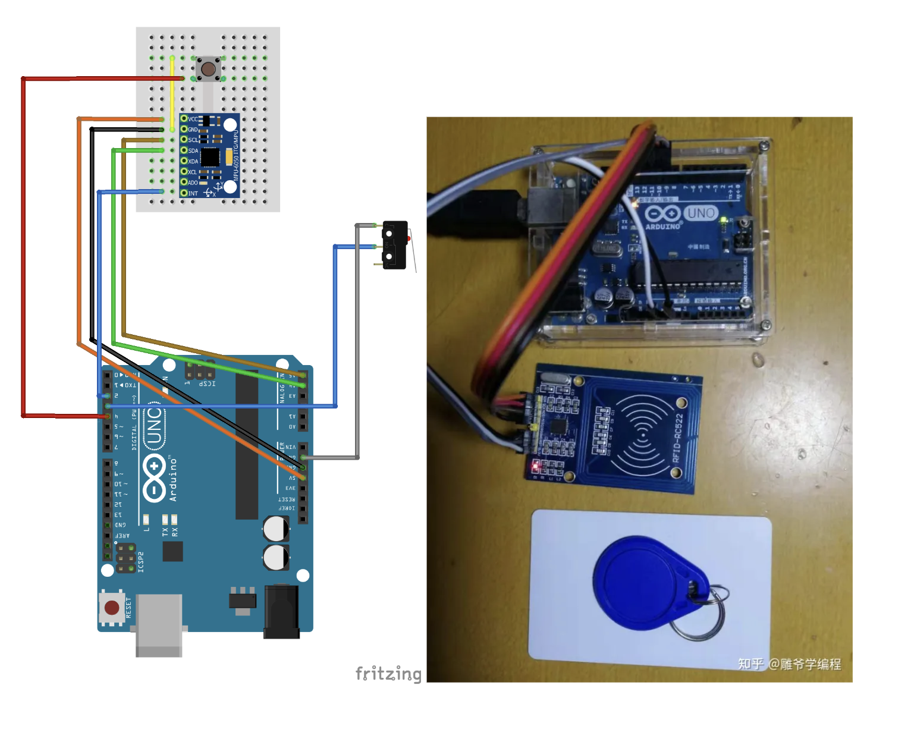

1.使用流程
a.在app上获取初始种子
b.种植界面的全息投影
c.与全息投影互动
d.推进种植进度，完成种植


a 全息投影部分
i.伪全息投影
利用智能手机或平板充当投影源，图像视频需要经过处理，背景为黑色，适合在光纤较暗的地方使用
经由亚克力板干涉成为伪三维图像
装置有两种形式
其中第一种原理如下：
a 全息投影部分
ii 真全息投影
空气全息投影、激光束投影技术（气体爆炸形成的）、雾幕立体成像
或者单纯使用2块屏幕，加一个摄像头识别，这样的话动作识别也可以加进去
【【自制】全息盒子 裸眼全息 AzureKinect实时眼球追踪 实时呈现观看者眼球机位的全息画面】
https://www.bilibili.com/video/BV1BM4y1u7H5?share_source=copy_web&vd_source=6bcb5e7d0668a509ab81b02f44d83dfe
b 互动积木部分
主体部分需要负责发出指令，变更投影的动画
第一种方案是在积木内置nfc贴片，产品主体发出指令后，儿童需要把积木放到产品主体设置的nfc读卡器处刷卡，
交互形式有长刷和多次刷卡两种。振动、发出声音就需要靠主体产品实现了。
【拟采用】第二种方案是在积木内置智能硬件，交互方式可以比刷卡多很多，可以让积木本身发出声音，
振动和感应倾斜，蓝牙连接主体产品即可。缺点是每一个积木都需要安装一个智能硬件，
成本不划算，可以通过这种方式解决，就是把读卡器也集成到硬件上，然后把它设置成一个大积木就叫园艺手套，
各种农具设置为nfc磁吸卡片，把卡片吸在园艺手套上才会启动相应的积木模式。
【个人项目介绍—Unity3d+Arduino主板数字原型开发】
https://www.bilibili.com/video/BV1BM4y1u7H5?share_source=copy_web&vd_source=6bcb5e7d0668a509ab81b02f44d83dfe
c app/软件部分
全息图的视频需要经过软件处理制作而成

UI界面
1、投影（投的内容-全息动画播放区域）
2、选择种子和种植图鉴合并
3、记录（浇水等）
4、我的（登陆、用户信息-等级、使用说明）



确定技术方案

互动积木部分
台子主体部分需要负责发出指令，变更投影的动画
把读卡器也集成到硬件上，然后把它设置成一个大积木就叫园艺手套，各种农具设置为nfc磁吸卡片，
把卡片吸在园艺手套上才会启动相应的积木模式（就像铠甲勇士的腰带可以放入一些道具）。
硬件方案：


造型生成
a.水晶球
在方形空间内投影，可以生成多块种植区，底座可设置按钮，圆球罩子比较可爱。
b.探看筒
c.摇摇不倒翁
d.大金字塔教具
e.方形
f.科学火箭